Bases de données
1. XML vs BD relationnelle
XML permet donc de structurer, à un degré plus ou moins important, de l’information. Aux extrêmes, on trouve :
-
des documents orientés texte (comme XHTML) : le document est construit pour être facilement lisible, la structure est souple et les éléments contiennent une grande quantité de texte.
-
des documents orientés données (comme SVG) : le document, très structuré, est utilisé pour organiser des données, il peut être difficile à lire.
Assimiler un ensemble de documents XML à une base de données suppose de disposer également d’un langage de manipulation A ce niveau, il existe :
-
XQuery, qui, pour XML, joue le rôle deSQLpour les bases de données relationnelles -
XSLT, un langage de transformation XML
XQuery et XSLT s’appuient sur XPath, un formalisme pour identifier une portion de document XML.
Mais les performances sont loin de celles des SGBD relationnels : l’accès à un document texte est, par nature, lent et séquentiel (sans index). Même chose au niveau des fonctionnalités : il n’y a aucune granularité au niveau du contrôle d’accès (soit on a accès à tout le document, soit on n’y a pas accès du tout), et les notions de transaction et d’accès concurrents sont absentes. Les méta-données disséminées dans les données en augmentent le volume : l’habillage prend beaucoup de place.
En revanche, un document XML est auto-suffisant (il contient les données, les méta-données, et les relations entre les 2). Il est indépendant de tout OS, de tout logiciel et de tout langage de programmation. On l’échange sans problème entre des systèmes hétérogènes (sans problème d’encodage).
2. XPath
C’est une brique de base, sur laquelle s’appuient les autres briques : XQuery, XSLT, etc.
XPath permet de naviguer dans un arbre XML, d’effectuer des recherches, d’accéder à des fragments (éléments, attributs, commentaires, etc…) d’un document XML et de les extraire.
XPath opère à partir d’un chemin,
et produit une liste de noeuds et/ou d’attributs.
Il peut également appliquer une fonction (count(), empty(), exists(), etc.)
à cette liste.
Exemple, étant donné :
<messages>
<message number="1" date="2020-12-25">
<to>masterDS1-2021</to>
<cc>jacquelin.charbonnel@math.cnrs.fr</cc>
<data>Joyeux Noël !</data>
</message>
<message number="2" date="2021-01-01">
<to>masterDS1-2021</to>
<cc>jacquelin.charbonnel@math.cnrs.fr</cc>
<data>Bonne année !</data>
</message>
</messages>extraire le contenu du message n°2 s’écrit ainsi en XPath :
/messages/message[@number=2]/data|
C’est un peu comme un nom absolu de fichier sous Unix,
mais avec beaucoup plus de possibilités
pour écrire le chemin.
Par exemple, des conditions peuvent être spécifiées
(on en voit une ci-dessus entre |
|
Un chemin peut renvoyer une liste de noeuds. Par exemple, renvoie une liste de 2 éléments. |
2.1. Chemin
Un chemin relie potentiellement un noeud (le nœud de départ, appelé également nœud contexte) à un ensemble de noeuds cibles. Ce sont ces noeuds cibles (triés dans l’ordre du document) qui sont retournés par l’expression XPath.
Un chemin est une suite d’étapes. Par exemple, à partir du document suivant :
<?xml version="1.0" encoding="UTF-8"?>
<bookstore>
<!-- ceci est un commentaire -->
Ceci est un noeud de type text
<book category="cooking">
<!-- ceci est un commentaire -->
<title lang="en" vo="it">Everyday Italian</title>
<author>Giada De Laurentiis</author>
<year>2005</year>
<price>30.00</price>
</book>
<book category="children">
<!-- ceci est un commentaire -->
<title lang="en">Harry Potter</title>
<author>J K. Rowling</author>
<year>2005</year>
<price>29.99</price>
</book>
<book category="web">
<!-- ceci est un commentaire -->
<title lang="en" vo="fr">XQuery Kick Start</title>
<author>James McGovern</author>
<author>Per Bothner</author>
<author>Kurt Cagle</author>
<author>James Linn</author>
<author>Vaidyanathan Nagarajan</author>
<year>2003</year>
<price>49.99</price>
</book>
<book category="web">
<!-- ceci est un commentaire -->
<title lang="en">Learning XML</title>
<author>Erik T. Ray</author>
<year>2003</year>
<price>39.95</price>
</book>
</bookstore>alors :
-
/bookstoreest un chemin à 1 étape -
/bookstore/bookest un chemin à 2 étapes -
/bookstore/book/yearest un chemin à 3 étapes
Le chemin est :
-
absolu, si le nœud contexte est la racine :
/étape1/…/étapeN -
relatif à l’objet courant sinon :
étape1/…/étapeN
La commande Unix xpath permet d’exécuter une requête XPath sur un fichier XML :
# 1 chemin à 1 étape
xpath -e /bookstore books.xml # l'élément bookstore sous la racine
xpath -e bookstore books.xml # les éléments bookstore sous l'objet courant
xpath -e book books.xml # les éléments book sous l'objet courant
# 1 chemin à 2 étapes
xpath -e /bookstore/book books.xml # les éléments book sous l'élément bookstores sous la racine
# 2 chemins à 1 étape
xpath -e /bookstore -e book books.xml # même chose
# 1 chemin à 3 étapes
xpath -e /bookstore/book/year books.xml
# 3 chemins à 1 étape
xpath -e /bookstore -e book -e year books.xml|
La commande est équivalent à : |
2.2. Etapes d’un chemin XPath
Une étape est ce qui se trouve entre 2 caractères /.
Elle est de la forme :
axe::type[filtre]
Elle retourne l’ensemble des nœuds correspondant au type spécifié,
reliés au nœud courant par la relation axe,
et satisfaisant le filtre.
Exemples d’étapes :
child::para
child::figure[attribute::id=”fr”]
child::*[position()=last()]2.2.1. Type
Il permet de restreindre l’ensemble des nœuds sélectionnés à un certain type de nœuds :
-
l_élément: oriente la progression vers les élémentsl_élément/bookstore/title # tous les sous-éléments title de bookstore
-
*: oriente la progression vers tout élément/bookstore/*/title # tous les sous-éléments title des sous-élements de bookstore /bookstore/*/* # tous les sous-éléments des sous-éléments de bookstore
-
node(): oriente la progression vers tous types de nœuds (éléments, commentaires, textes, etc.)/bookstore/*/node() # tous les nœuds sous les sous-élements de bookstore
-
text(): oriente la progression vers les nœuds de type texte/bookstore/*/author/text() # tous les nœuds texte sous les sous-élements des sous-éléments de bookstore
-
comment(): restreint la recherche aux nœuds de type commentaire/bookstore/*/comment() # tous les commentaires sous les sous-élements de bookstore
Exemple sur le document :
<!-- des fruits -->
<fruits>
<item>pomme</item>
<item>banane</item>
<item variete="William">poire</item>
</fruits>alors les chemins ci-dessous produisent les résultats indiqués :
| chemin | #nœuds | nœuds |
|---|---|---|
|
1 |
|
|
3 |
|
`/fruits/comment() |
0 |
|
`/comment() |
1 |
|
Autre exemple sur le document :
<fruits>
avant pomme
<item>pomme</item>
entre pomme et banane
<item>banane</item>
entre banane et poire
<item variete="William">poire</item>
après poire
</fruits>alors les chemins ci-dessous produisent les résultats indiqués :
| chemin | #nœuds | nœuds |
|---|---|---|
|
3 |
|
|
7 |
|
|
4 |
|
2.2.2. Axe
L’axe définit la direction du parcours :
-
en avant
child::(défaut)self::(ou.)-
descendant:: -
descendant-or-self::(ou//)
 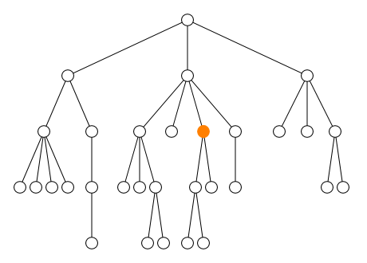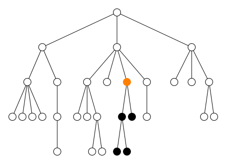
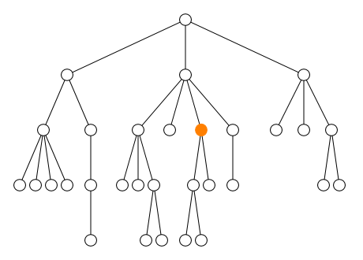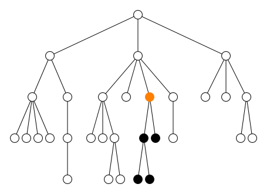 -
-
en arrière
parent::(ou..)-
ancestor:: -
ancestor-or-self::
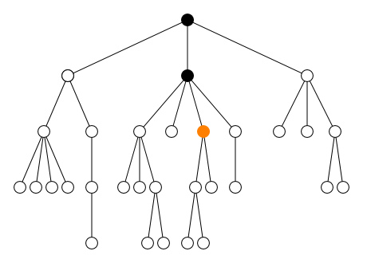 -
-
à gauche et à droite
preceding-sibling::following-sibling::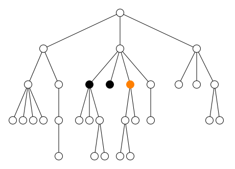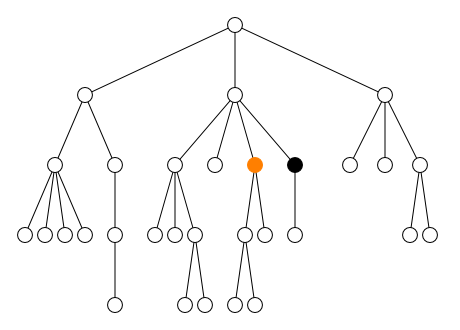 -
avant et après
|
|
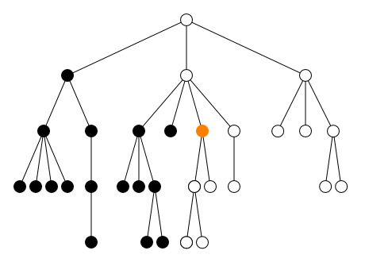
|
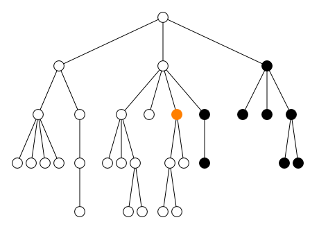
|
-
cible les attributs :
attribute::(ou@)
L’axe est optionnel, sa valeur par défaut étant child::.
# tous les attributs des éléments titres sous /bookstore/book
xpath -e '/bookstore/book/title/attribute::*' books.xml
xpath -e /bookstore/book/title -e 'attribute::*' books.xml
xpath -e '/bookstore/book/title/@*' books.xml
# tous les attributs de chaque élément books sous bookstore
xpath -e "/bookstore/book/@*" books.xml
# tous les attributs des sous-élements directs de /bookstore/books
xpath -e "/bookstore/book/*/@*" books.xml
# tous les attributs des éléments (tout niveau) sous /bookstore/books
xpath -e "/bookstore/book//@*" books.xml2.2.3. Filtre
Un filtre oriente la progression, parmi les objets sélectionnés dans le contexte courant, vers ceux qui satisfont une condition. Exemples :
# le contenu textuel des éléments title ayant un attribut vo
xpath -e '//title[@vo]/text()' books.xml
# le title du 2^ème^ book sélectionné jusque là
xpath -e '//book[2]/title' books.xml
# les prix>35
xpath -e "//book[price>35]/price" books.xml
# le nom de l'auteur de Harry Potter
xpath -e '//book[title="Harry Potter"]/author/text()' books.xml
# le titre des livre de catégorie web
xpath -e '//book[@category="web"]/title/text()' books.xml
# les valeurs de l'attribut `lang` des titres
xpath -e '//book/title/@*[name()="lang"]' books.xml3. XQuery : aperçu
XQuery est un langage de requête qui s’applique aux documents XML. Il se positionne par rapport à XML comme SQL par rapport aux bases de données relationnelles. Il s’appuie sur XPath.
XQuery possède de quoi faire des boucles (for), des tests (if), des regroupements (group by), des jointures (where), etc.
| Une autre approche est d’utiliser une bibliothèque XML et utiliser un langage de programmation plus universel. C’est pourquoi XQuery ne sera pas détaillé dans ce cours. |
Exemple, à partir d’un fichier de données et d’un fichier de requête :
<employes>
<employe>
<nom>Durant</nom>
<prenom>Albert</prenom>
<nele>23/09/1958</nele>
</employe>
<employe>
<nom>Dupont</nom>
<prenom>Alphonse</prenom>
<nele>23/12/1975</nele>
</employe>
<employe>
<nom>Dupont</nom>
<prenom>Isabelle</prenom>
<nele>12/03/1967</nele>
</employe>
...
</employes>et du programme XQuery :
for $b in document ("http://example.com/exemple.xml")//employe
where $b/nom = "Dupont"
return
<dupont>{
$b/prenom,
$b/nele
}</dupont>on obtient (xqilla étant un interpréteur XQuery) :
$ xqilla -i data.xml req.xquery
<dupont>
<prenom>Alphonse</prenom>
<nele>23/12/1975</nele>
</dupont>
<dupont>
<prenom>Isabelle</prenom>
<nele>12/03/1967</nele>
</dupont>4. XSLT
XSLT (eXtensible Stylesheet Language Transformations) permet de transformer un fichier XML, c’est-à-dire permet de créer de nouveaux documents (XML, HTML, texte) à partir d’informations issues d’un fichier XML.
Les transformations elles-mêmes sont exprimées en XML, dans une feuille XSL.
4.1. Structure d’une feuille XSL
Elle débute par une en-tête, suivi de templates.
<?xml version="1.0" encoding="UTF-8" ?>
<!-- l'élément racine -->
<xsl:stylesheet version="1.0" xmlns:xsl="http://www.w3.org/1999/XSL/Transform"> (1)
<!-- l'élément output -->
<xsl:output (2)
method="html"
encoding="UTF-8"
doctype-public="-//W3C//DTD HTML 4.01//EN"
doctype-system="http://www.w3.org/TR/html4/strict.dtd"
indent="yes" ></xsl:output>
<xsl:template match="expression XPath"> (3)
...
</xsl:template>
<xsl:template match="expression XPath"> (3)
...
</xsl:template>
...
</xsl:stylesheet>| 1 | l’attribut xmlns:xsl déclare un espace de nommage xsl : toutes les balises utilisées dans une feuille XSL doivent être préfixées par xsl:. |
| 2 | l’élément output précise le type du document à produire ;
l’attribut method spécifie le format du document de sortie : XML, HTML ou Text |
| 3 | chaque élément template définit les transformations à appliquer aux données sélectionnées par l’expression XPath spécifiée comme valeur de l’attribut match |
Chacun de ces templates va remplacer une portion du document XML source par le contenu du template (les nœuds du document source qui ne sont pas sélectionnés restent inchangés).
4.2. Templates XSL
Un template permet donc de définir une transformation à appliquer à la portion du fichier source sélectionnée par l’expression XPath qui lui est attachée. Sa forme générale est :
<xsl:template match="xpath expression">
... (1)
</xsl:template>| 1 | le contenu de l’élément se compose d’éléments XSL et de texte (conformes à la syntaxe XML si on génère de l’XML). |
4.3. Exemples
4.3.1. Exemple simplicite
Voici un bête exemple pour comprendre le principe. Primo, un fichier de données XML (ici quasiment vide) :
<?xml version="1.0" encoding="UTF-8"?>
<data>
<!-- mon commentaire -->
<ma_donnée>x=123.7</ma_donnée>
</data>Secundo, une feuille XSL qui va générer un fichier HTML :
<?xml version="1.0" encoding="UTF-8"?>
<xsl:stylesheet version="1.0" xmlns:xsl="http://www.w3.org/1999/XSL/Transform">
<xsl:output
method="html"
encoding="UTF-8"
doctype-public="-//W3C//DTD HTML 4.01//EN"
doctype-system="http://www.w3.org/TR/html4/strict.dtd"
indent="yes" >
</xsl:output>
<xsl:template match="/"> (1)
<html>
<head>
<title>Mon premier document généré</title>
</head>
<body>
<p>XSLT ? fastoche !</p>
</body>
</html>
</xsl:template>
</xsl:stylesheet>| 1 | puisque le xpath spécifié est "/", alors le contenu de ce template va remplacer la totalité de de l’arbre XML originel |
Tertio, on applique la transformation au fichier XML
via la commande xsltproc :
$ xsltproc tr.xsl data.xml
<!DOCTYPE html PUBLIC "-//W3C//DTD HTML 4.01//EN" "http://www.w3.org/TR/html4/strict.dtd">
<html>
<head>
<meta http-equiv="Content-Type" content="text/html; charset=UTF-8">
<title>Mon premier document généré</title>
</head>
<body><p>XSLT ? Fastoche !</p></body>
</html>| original | transformé |
|---|---|

|
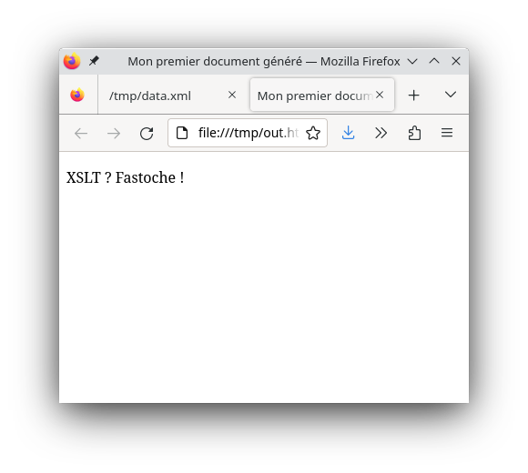
|
4.3.2. Exemple plus concret
On voudrait maintenant récupérer la donnée présente dans le fichier xml dans le fichier transformé. On utilise pour cela l’élément :
<xsl:value-of select="xpath expression"/>qui récupère la valeur du noeud pointé par l’expression xpath. Ce qui donne la feuille de transformation :
...
<xsl:template match="/">
<html>
<head>
<title>Mon premier document généré</title>
</head>
<body>
<p>
<xsl:value-of select="//ma_donnée/text()"/> (1)
</p>
</body>
</html>
</xsl:template>
...| 1 | pour récupérer le texte de l’élément ma_donnée |
Ce qui donne :
$ xsltproc tr.xsl data.xml
<!DOCTYPE html PUBLIC "-//W3C//DTD HTML 4.01//EN" "http://www.w3.org/TR/html4/strict.dtd">
<html>
<head>
<meta http-equiv="Content-Type" content="text/html; charset=UTF-8">
<title>Mon premier document généré</title>
</head>
<body><p>x=123.7</p></body> (1)
</html>| 1 | la donnée est bien là |
| original | transformé |
|---|---|

|
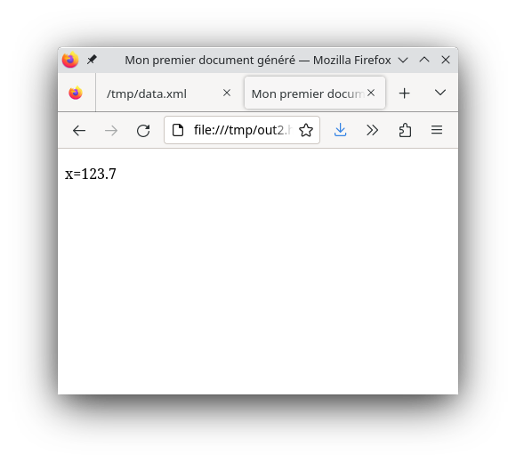
|
4.3.3. Exemple embelli
On veut maintenant ajouter de l’information pour bien présenter les données. On utilise pour cela l’élément :
<xsl:text> du texte littéral </xsl:text>qui insère du texte dans le flux de sortie :
...
<xsl:template match="/">
<html>
<head>
<title>Mon premier document généré</title>
</head>
<body>
<h1>Mes données</h1>
<p>
<xsl:text>Mon premier jeu de données : </xsl:text> (1)
<xsl:value-of select="//ma_donnée/text()"/>
</p>
</body>
</html>
</xsl:template>
...| 1 | texte littéral |
Ce qui donne :
$ xsltproc tr.xsl data.xml
<!DOCTYPE html PUBLIC "-//W3C//DTD HTML 4.01//EN" "http://www.w3.org/TR/html4/strict.dtd">
<html>
<head>
<meta http-equiv="Content-Type" content="text/html; charset=UTF-8">
<title>Mon premier document généré</title>
</head>
<body>
<h1>Mes données</h1>
<p>Mon premier jeu de données : x=123.7</p></body> (1)
</html>| 1 | le texte est bien là |
| original | transformé |
|---|---|
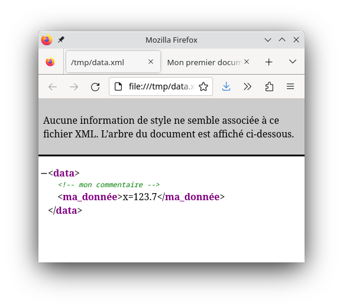
|
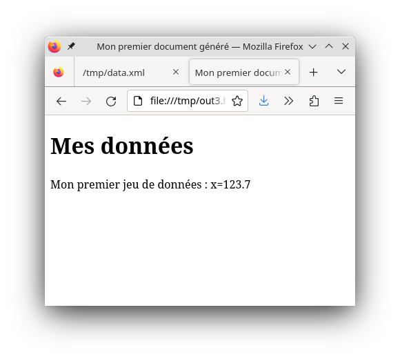
|
4.3.4. Exemple généralisé
Il y a maintenant plusieurs données dans le fichier xml :
<?xml version="1.0" encoding="UTF-8"?>
<data>
<!-- mon commentaire -->
<ma_donnée>x=123.7</ma_donnée>
<ma_donnée>y=0</ma_donnée>
<ma_donnée>z = (1.1,-2)</ma_donnée>
</data>On va faire template pour générer l’ossature de la page, et qui applique un second pour chaque données :
...
<xsl:template match="/">
<html>
<head>
<title>Mon premier document généré</title>
<style> table,th,td { border: solid 1px red ; } </style>
</head>
<body>
<p>
<xsl:text>Mon premier jeu de données : </xsl:text>
<xsl:apply-templates/> (1)
</p>
</body>
</html>
</xsl:template>
<xsl:template match="//ma_donnée">
<xsl:value-of select="text()"/>
</xsl:template>
...| 1 | on recherche des templates et on applique les transformations |
ce qui donne :
$ xsltproc tr.xsl data.xml
<!DOCTYPE html PUBLIC "-//W3C//DTD HTML 4.01//EN" "http://www.w3.org/TR/html4/strict.dtd">
<html>
<head>
<meta http-equiv="Content-Type" content="text/html; charset=UTF-8">
<title>Mon premier document généré</title>
<style> table,th,td { border: solid 1px red ; } </style>
</head>
<body><p>Mon premier jeu de données : <table>
<tr><td>x=123.7</td></tr>
<tr><td>y=0</td></tr>
<tr><td>z = (1.1,-2)</td></tr>
</table></p></body>
</html>| original | transformé |
|---|---|
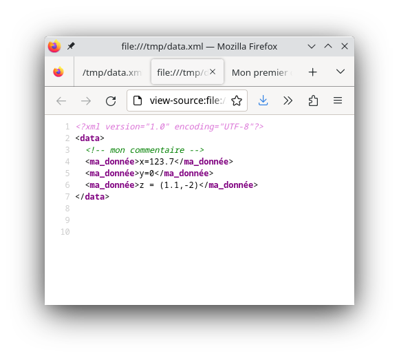
|
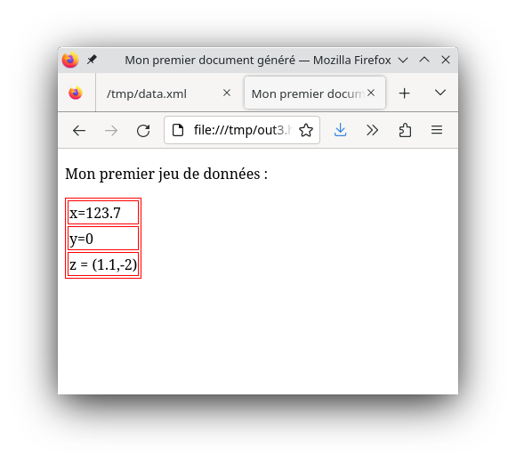
|
4.4. Associer une feuille XSL à un document XML
Un navigateur web est capable appliquer des transformations XSL à un document XML. Pour cela, il faut que le document XML (correspondant à l’URL spécifiée dans la navigateur) référence la feuille XSL :
<?xml version="1.0" encoding="UTF-8"?>
<?xml-stylesheet type="text/xsl" href="mafeuille.xsl"?>4.5. Eléments XSL
Ces éléments peuvent apparaitre dans le contenu du template.
4.5.1. xsl:value-of
<xsl:value-of select="xpath expression"/>xsl:value-of extrait la valeur d’un noeud pointé par l’expression XPath
select.
Exemple :
...
<xsl:template match="/">
<html>
<head>
<title>Mon premier document généré</title>
</head>
<body>
<p>XSLT ? fastoche !</p>
*****
<xsl:value-of select="//personne[nom='Erre']/nom/text()" ></xsl:value-of>
*****
</body>
</html>
</xsl:template>
...Il peut être intéressant d’utiliser ici les fonction XPath, comme :
-
count(expression), qui retourne le nombre de nœuds sélectionnés par l’expression, -
sum(expression), qui retourne la somme des nombres sélectionnés par l’expression, -
etc.
Exemple :
<xsl:value-of select="sum(.//participant/qualification) div count(.//participant/qualification)"/>4.5.3. xsl:for-each
<xsl:for-each select="xpath expression">
CONTENU
</xsl:for-each>xsl:for-each itère sur un ensemble de noeuds, et génère
autant d’exemplaires de CONTENU que de nœuds sélectionnés par l’expression xpath.
Exemple, à partir du même fichier de données et du fichier de transformation :
...
<xsl:template match="/">
<mailing_list>
<xsl:for-each select="repertoire/personne">
<item>
<xsl:text>nom: </xsl:text>
<xsl:value-of select="nom/text()" ></xsl:value-of>
</item>
</xsl:for-each>
</mailing_list>
</xsl:template>
...4.5.4. xsl:sort
xsl:sort trie suivant une clé alphabétique ou numérique,
en ordre croissant ou décroissant.
Exemple :
...
<xsl:template match="/">
<mailing_list>
<xsl:for-each select="repertoire/personne">
<xsl:sort select="nom" order="descending">
<xsl:sort select="prenom">
<item>
<xsl:text>nom: </xsl:text>
<xsl:value-of select="nom/text()" ></xsl:value-of>
</item>
</xsl:for-each>
</mailing_list>
</xsl:template>
...4.5.5. xsl:element
<xsl:element name="...">
...
</xsl:element>construit un noeud élément avec les attributs
et le contenu définis dans le corps de l’élément xsl:element.
Exemple :
<xsl:element name="p">
<xsl:value-of select="para" />
</xsl:element>crée <p>…</p> contenant le texte présent dans l’élément
para du document d’origine.
4.5.6. xsl:attribute
Doit être placé dans un élément xsl:element.
<xsl:attribute name="...">valeur</xsl:attribute>crée un attribut. Exemple :
<xsl:element name="image">
<xsl:attribute name="src">
<xsl:value-of select=”@adresse”/>
</xsl:attribute>
....
</xsl:element>crée une balise image,
ayant un attribut src dont la valeur est
celle de l’attribut adresse de l’élément d’origine :
<image src="maphoto.jpg"></image>4.6. Associer une feuille XSL à un document XML
Un navigateur web est capable appliquer des transformations XSL à un document XML. Pour cela, il faut que le document XML (correspondant à l’URL spécifiée dans la navigateur) référence la feuille XSL :
<?xml version="1.0" encoding="UTF-8"?>
<?xml-stylesheet type="text/xsl" href="mafeuille.xsl"?>